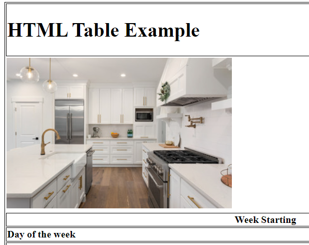
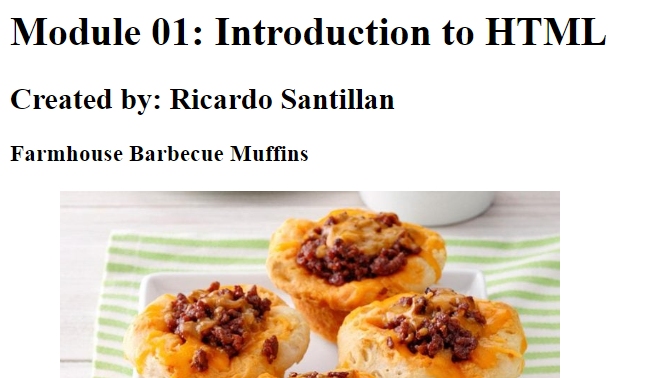
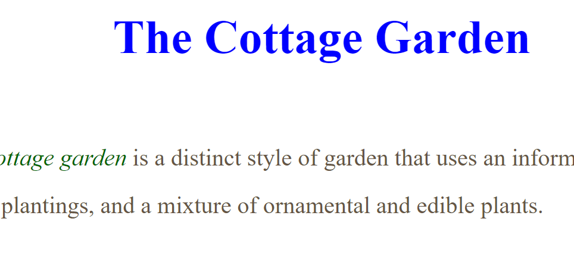
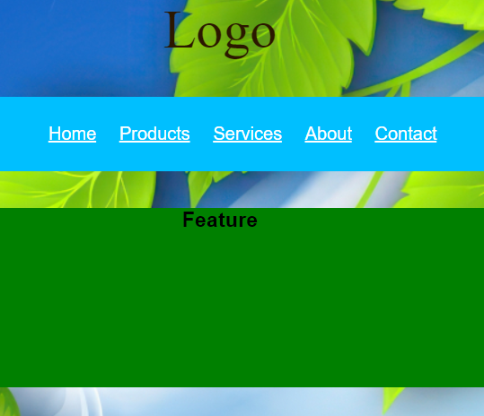
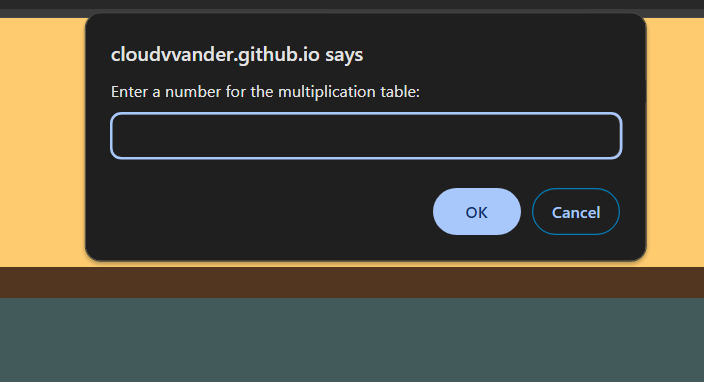
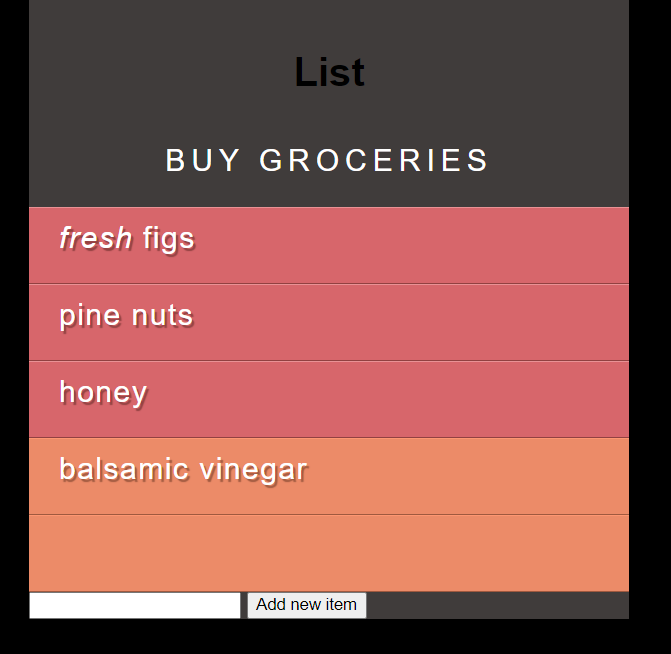
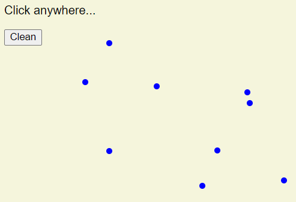

Below are some of the module assignments I've worked on
-

Meal Planner
A website designed using only HTML to produce a meal planner.
-

Recipes
This website showcases a list of recipes and image styling using only HTML.
-

Using CSS to style a document
This website depicts the usage of CSS to style a webpage.
-

Module 04 - CSS Styling
This website showcases more detailed usage of CSS to style a homepage on a website.
-

Using JavaScript
This website depicts JavaScript being used to create a multiplication table.
-
Using JavaScript to change webpage content.
This website used JavaScript to change the content on a webpage.
-

Grocery List
This website makes use of JavaScript to add content to a grocery list.
-

Drawing on a Webpage
This website allows the user to draw dots around the website and the ability to clear them.